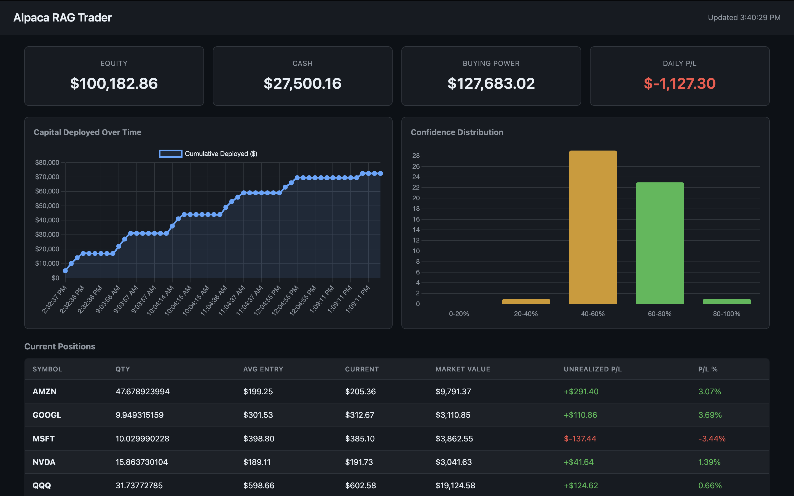

Alpaca RAG Trader
Autonomous paper trading agent combining retrieval-augmented generation with live market data — built entirely with Claude Code.
Python
SQLite FTS5
Claude API
Alpaca API
Chart.js
stdlib only
Market Data (Alpaca) ──┐
Portfolio State ──┼──▶ Reasoner (Claude Sonnet) ──▶ Risk Validator ──▶ Broker (Alpaca)
Knowledge Base (FTS5) ──┘ ▲
│
6,906 chunks from
4 investing books
What it does
- Ingests 4 investing books (6,906 text chunks) into a SQLite FTS5 knowledge base with BM25 ranking
- Each cycle: fetches live market data, gets portfolio state, queries relevant book passages, sends context to Claude Sonnet for structured JSON trade decisions with confidence scores
- Enforces risk guardrails — max 10% per position, $5,000 max per trade, 0.6 minimum confidence threshold
- Live monitoring dashboard with portfolio metrics, positions, trade history, and confidence distributions
How I built it with Claude Code
- Described the full system first — "autonomous trading agent that consults a book knowledge base before making decisions" — then iterated on architecture until the data flow was clean
- Deliberately avoided heavy C-extension packages (chromadb, numpy, pydantic). Directed Claude Code to use stdlib: SQLite FTS5 over vector databases, dataclasses over Pydantic, urllib over httpx
- Caught and corrected AI-generated issues: deprecated Alpaca endpoints, mid-sentence chunking, and loose risk validation logic
- Built the monitoring dashboard last — described needed metrics, reviewed Chart.js code, iterated on auto-polling for market hours

Key judgment calls
- Chose FTS5 over vector embeddings — simpler, zero dependencies, and BM25 is good enough for structured book content. The kind of call you make when you understand AI tool strengths vs. actual requirements
- Added dry-run mode early to validate the full pipeline without real orders — a systems thinking decision that saved debugging time later